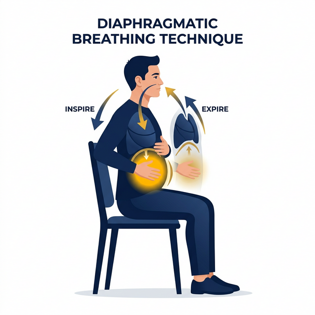
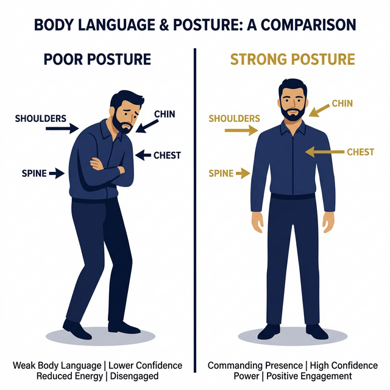

O método definitivo para homens desenvolverem presença vocal irresistível, oratória magnética e o poder de comandar qualquer ambiente com autoridade real.
Seis módulos que vão transformar sua voz, sua postura e sua presença para sempre.
Homens com voz grave e calma são percebidos como mais inteligentes, mais confiáveis e mais poderosos — mesmo antes de dizer qualquer coisa.
Pesquisas da Universidade de Duke (EUA) provaram que CEOs com vozes mais graves ganham salários mais altos, lideram empresas maiores e são vistos como mais capazes por suas equipes. Não é sorte. É biológico e é treinável.
A voz é seu cartão de visita mais poderoso. Ela chega antes da sua aparência, persiste após você sair da sala e determina, inconscientemente, como as pessoas te classificam: líder ou seguidor, confiante ou inseguro, dominante ou irrelevante.
Não é o que você diz. É como você soa dizendo isso. A voz carrega emoção enquanto as palavras carregam informação.
— Stanford Voice LabExistem 5 dimensões que constroem uma voz de autoridade masculina:
| Dimensão | O que Significa | Impacto |
|---|---|---|
| Tom (Grave) | Frequência base da voz | Autoridade, confiança |
| Projeção | Volume sem esforço | Presença, liderança |
| Ritmo | Velocidade e pausas estratégicas | Inteligência, controle |
| Clareza | Dicção e articulação | Credibilidade, competência |
| Emoção | Variação e calor humano | Carisma, conexão |
Identificar sua voz atual. Grave uma mensagem de 60 segundos apresentando-se. Ouça sem julgamento. A partir de agora, você vai transformar cada um dos 5 pilares acima.
99% dos homens respiram do jeito errado – e isso é o que está tornando sua voz fina, cansada e sem impacto.
A respiração diafragmática é o segredo que separa uma voz comum de uma voz de comando. Cantores profissionais, atores de Hollywood e grandes políticos aprenderam isso. Agora é sua vez.

Respiração diafragmática: a base de toda voz poderosa masculina
A ressonância é o que transforma uma voz simplesmente grave em uma voz que vibra no peito de quem ouve. Atores como Morgan Freeman e Vin Diesel não têm vozes poderosas apenas por genética — eles sabem usar a caixa de ressonância do tórax.
Antes de abrir a boca, seu corpo já está falando. E está dizendo se você é um homem a ser respeitado — ou ignorado.
Amy Cuddy (Harvard) comprovou que adotar posturas de poder por 2 minutos aumenta os níveis de testosterona em 20% e reduz o cortisol (hormônio do estresse) em 25%. Sua postura não apenas reflete como você se sente — ela determina como você se sente e como você soa.

Postura aberta e fechada — a diferença que todos percebem, mas poucos compreendem
Antes de entrar em qualquer ambiente — reunião, entrevista, encontro — respire fundo uma vez, abra o peito, solte os ombros e entre devagar. Velocidade de entrada comunica status.
O homem que fala devagar nunca parece despreparado. O homem que fala rápido, sempre parece nervoso.
Os melhores oradores do mundo — Obama, Steve Jobs, Churchill — compartilham um segredo simples: eles dominam o silêncio. A pausa estratégica é mais poderosa do que qualquer palavra. Ela diz: "O que estou prestes a falar é importante suficiente para esperar."
O silêncio é o mais poderoso dos gritos. Um homem que sabe calar, sabe quando falar — e quando fala, todo mundo ouve.
— Dito Clássico de Liderança"Pedro Pérez pede para poupar pouco por pavor de passar por penúria."
"A raridade da arte da oratória está na clareza da articulação."
"Grande guerreiro ganha glória, guia grupos gigantes, governa a guerra."
| Velocidade | Percepção | Quando Usar |
|---|---|---|
| Muito Rápida | Ansioso, inseguro, descontrolado | Nunca |
| Rápida | Entusiasmado, excitado | Contar uma história emocionante |
| Moderada | Profissional, competente | Apresentações, reuniões |
| Lenta e Deliberada | Poderoso, inteligente, seguro | Declarações importantes, confrontos |
Falar em público não é sobre ser perfeito. É sobre ser presente, claro e contagioso o suficiente para que as pessoas queiram te ouvir.
O palco é qualquer lugar onde sua voz deve ser ouvida — uma reunião, uma mesa de jantar, um microfone
Todo discurso ou fala poderosa segue uma estrutura simples que você pode aplicar em qualquer situação, de uma entrevista a um brinde de casamento:
Aura não é magia. É o resultado de anos de consistência em dominar sua voz, seu corpo e sua presença — mas você pode acelerar esse processo.
Presença que magnetiza é resultado de treinamento, não de sorte ou sorte genética
Homens que irradiam presença magnética não são necessariamente os mais altos, mais ricos ou mais bonitos. São os que desenvolveram um conjunto integrado de habilidades: falam com convicção, movem-se com propósito, ouvem com atenção genuína e ocupam o espaço sem pedir licença.
Grave, projetada, clara. Sem hesitações. Sem interrogações no final de declarações.
Coluna ereta, ocupando espaço. Movimento lento e deliberado. Sem agitação nervosa.
Contato visual constante ao falar e ao ouvir. Nunca olhe para baixo ao fazer declarações.
Emoção controlada. A reação mais poderosa é nenhuma reação. Pausa antes de responder.
Um homem não precisa de aprovação para ocupar o espaço. Ele simplesmente ocupa. E os outros percebem.
— Código da Presença MasculinaIsso já te coloca à frente de 90% dos homens que compram e não praticam. A diferença agora é simples: execução.
Grave-se falando por 60 segundos agora mesmo. Em 30 dias, grave novamente. Essa será sua maior prova de que o método funciona.
O Código da Voz — Método Presença Masculina
© 2025 Todos os direitos reservados